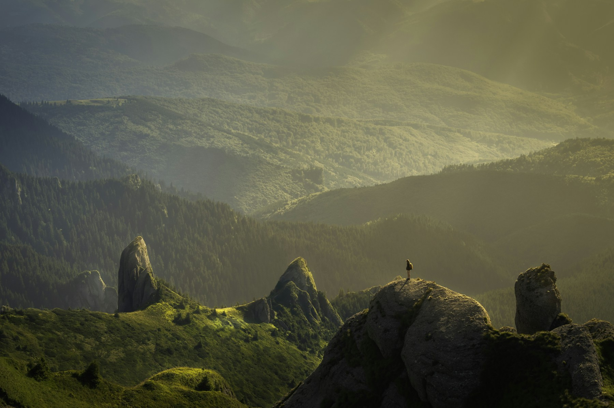

Open by design
Welcoming entries, readable routes and inclusive spaces.
About Starlight Park
More than a collection of attractions, Starlight is a connected landscape designed for curiosity, comfort and everyday use.

Why it exists
Good public space should feel intuitive: easy to enter, rewarding to explore and generous enough to hold many different kinds of day. Starlight’s paths, play areas and quiet corners are conceived as one continuous experience.
The project prioritises accessible routes, resilient planting and places where visitors can meet without needing to buy anything.

Four principles
Welcoming entries, readable routes and inclusive spaces.
Ecology shapes where paths, shade and activity belong.
Movement, observation and imagination all count as play.
The landscape is allowed to mature, shift and surprise.
